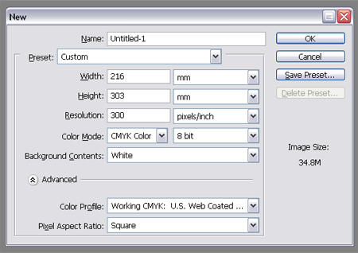

The Good Kind Of Bleed
A design destined for print requires setting up to certain specifications to ensure that the work is printed correctly by industrial lithographic or digital print firms. This often starts with the initial document upon which the design is to be created by adding the correct bleed area and crop marks.
Baffling Bleed
Let’s start with the term bleed, this is the area of artwork that is extended beyond the actual dimensions of the document. It is used to avoid strips of white paper showing on the edges of your print should the batch be misaligned when cut to size.
Any objects in your artwork that touch the edges of the document require bleed, for instance a background colour or image should spread to cover the entire bleed area as should any objects that creep in from the side of the page.

In the UK at least, bleed of 3mm is commonly required. This 3mm accounts for each of the four sides of the page, therefore you should add 6mm to the width and height of the document, for example:
A4 Paper = 210mm x 297mm
210mm + 6mm = 216mm
297mm + 6mm = 303mm
Total Document Size = 216mm x 303mm
In addition to bleed, you should also add a margin to the edges of the document to avoid having your objects look as if they are about to fall of the page or even worse actually get cropped off when the document is trimmed! The amount of margin is personal preference, but 3mm, 5mm or 10mm is usually used depending on the size of the overall design.
Setting Bleed in Photoshop
When creating your document, simply make the calculations to the artwork size as above and enter them into the Width and Height boxes.